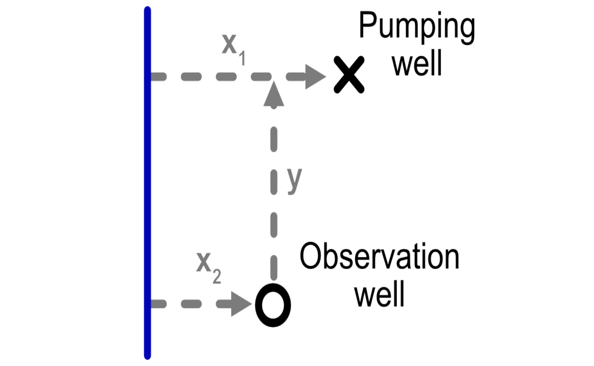

Identify-blind-spots.Rmd
library(isw)
#> Loading required package: expint
#> Loading required package: units
#> udunits database from /Library/Frameworks/R.framework/Versions/4.4-arm64/Resources/library/units/share/udunits/udunits2.xml
library(patchwork)
library(units)
library(png)
library(dplyr)
#>
#> Attaching package: 'dplyr'
#> The following objects are masked from 'package:stats':
#>
#> filter, lag
#> The following objects are masked from 'package:base':
#>
#> intersect, setdiff, setequal, union
library(ggplot2)
library(tidyr)The package handles the configuration between river, pumping well, and observation well in a particular way, as shown in the figure below. We need to keep track of the following variables:
x1: Distance from the pumping well to the riverx2: Distance from the observation well to the
rivery: Component of the distance between the two wells that
is parallel to the river
We also need to consider aquifer parameters. We parameterize an aquifer with the following characteristics, based on the Glover paper:
D): 100 ftK): 0.001 ft/secV): 0.2
# example from Glover
# x1 <- set_units(c(1, 5, 10, 25, 50) * 1e3, 'ft')
D <- set_units(100, 'ft')
K <- set_units(0.001, 'ft/sec')
# t_sec <- set_units(1, "year") # sec in a year
V <- 0.2To make the plots look nice, we can create the following themes.
txt_size <- 16
theme_basic <- theme(
line = element_line(size = 1, color = "black"),
panel.background = element_rect(fill = "white"),
legend.text = element_text(size = txt_size*0.9, color = "black"),
axis.title.x = element_text(size = txt_size, colour = "black"),
axis.title.y = element_text(size = txt_size, angle = 90, colour = "black"),
legend.title = element_text(size = txt_size, color = "black"))
#> Warning: The `size` argument of `element_line()` is deprecated as of ggplot2 3.4.0.
#> ℹ Please use the `linewidth` argument instead.
#> This warning is displayed once every 8 hours.
#> Call `lifecycle::last_lifecycle_warnings()` to see where this warning was
#> generated.
theme_std <- theme_basic %+replace% theme(
panel.border = element_rect(fill = NA, colour = "black", size = 1),
panel.grid.major = element_blank(),
panel.grid.minor = element_blank(), axis.line = element_blank(),
axis.ticks.x = element_line(colour = "black", size = 0.5),
axis.ticks.y = element_line(colour = "black", size = 0.5),
axis.ticks.length = unit(1, "mm"),
axis.text.x = element_text(size = txt_size*0.9, colour = "black"),
axis.text.y = element_text(size = txt_size*0.9, colour = "black", hjust = 1))
#> Warning: The `size` argument of `element_rect()` is deprecated as of ggplot2 3.4.0.
#> ℹ Please use the `linewidth` argument instead.
#> This warning is displayed once every 8 hours.
#> Call `lifecycle::last_lifecycle_warnings()` to see where this warning was
#> generated.
theme_diagram <- theme_basic %+replace%
theme(
panel.border = element_rect(fill = NA, colour = NA, size = 1),
panel.grid.major = element_blank(),
panel.grid.minor = element_blank(),
axis.line = element_blank(),
axis.ticks.x = element_blank() ,
axis.ticks.y = element_blank(),
axis.ticks.length = unit(1, "mm"),
axis.text.x = element_blank(),
axis.text.y = element_blank(),
axis.title.x = element_blank(),
axis.title.y = element_blank()) %+replace%
theme(legend.position = c(0.8, 0.75), legend.box = 'vertical', legend.title = element_blank())
#> Warning: A numeric `legend.position` argument in `theme()` was deprecated in ggplot2
#> 3.5.0.
#> ℹ Please use the `legend.position.inside` argument of `theme()` instead.
#> This warning is displayed once every 8 hours.
#> Call `lifecycle::last_lifecycle_warnings()` to see where this warning was
#> generated.We first generate a tibble of different permutations of
distances among the river, pumping well, and observation well.
# Pumping well locations
x1_coords <- seq(-1, 6, by = 0.05)
y1_coords <- seq(-1, 11, by = 0.2)
# x1_coords <- seq(0, 5, by = 0.05)
# y1_coords <- seq(0, 10, by = 0.2)
pump_wells <- crossing(x1 = x1_coords, y1 = y1_coords) %>%
mutate(keep = x1 > 0 & x1 <= 5 & y1 >= 0 & y1 <=10,
across(all_of(c("x1","y1")), function(x) set_units(x,"mi")))
# Observation well locations
x2_coords <- c(0.8, 1.6, 1, 3, 4)
y2_coords <- c(2, 4, 8.5, 1, 6)
well_diam <- set_units(50, "ft")
# Times
t_years <- 5 #c(0.05, seq(0.1,5, by = 0.1))
obs_wells <- tibble(x2 = x2_coords, y2 = y2_coords, well_diam) %>%
mutate(`Obs. well` = as.factor(row_number()),
across(all_of(c("x2","y2")), function(x) set_units(x,"mi")))
wells <- crossing(pump_wells,
obs_wells,
t = set_units(t_years,'year')) %>%
mutate(K = K, D = D, V = V,
y = abs(y2 - y1),
id = row_number())
# locations <- tribble(~x1, ~y, ~`Obs. well`, ~`Pumping well`,
# 0.2, 1.5, "a", "c",
# 0.8, 1.5, "a", "d",
# 0.2, 0, "b", "c",
# 0.8, 0, "b", "d") %>%
# mutate(x2 = 0.5,
# across(all_of(c("x1","x2","y")), function(x) set_units(x,"mi")), id = row_number())To visualize these permutations we can plot them.
p_grid <- ggplot() +
geom_point(data = pump_wells, aes(x1, y1), size = 0.5) +
geom_point(data = pump_wells %>% filter(!keep), aes(x1, y1), size = 0.5, color = "red") +
geom_point(data = obs_wells, aes(x2, y2, shape = `Obs. well`, color = `Obs. well`), size = 4) +
# scale_shape_manual(values = c(0, 5)) +
xlab("Distance from river (x)") +
ylab("Distance along river (y)") +
# scale_color_discrete("Well type") +
theme_std +
coord_equal()
p_grid
#> Warning: The `scale_name` argument of `continuous_scale()` is deprecated as of ggplot2
#> 3.5.0.
#> This warning is displayed once every 8 hours.
#> Call `lifecycle::last_lifecycle_warnings()` to see where this warning was
#> generated.Now we can get aquifer depletion with the
get_depletion_from_pumping function. As seen in the output,
the function returns a data.frame with two columns:
stream_depletion_fraction: The fraction of pumping at
that timestep that is associated with stream depletion (opposed to
drawing down the aquifer)aquifer_drawdown_ratio: The amount of aquifer drawdown
(i.e., change in groundwater level) per unit pumping.
depletion <- get_depletion_from_pumping(wells %>% mutate(x1=abs(x1)))
head(depletion)
#> stream_depletion_fraction aquifer_drawdown_ratio
#> 1 0.6742365 -9.519514e-02 [s/ft^2]
#> 2 0.6742365 -1.003251e-05 [s/ft^2]
#> 3 0.6742365 -1.471024e-02 [s/ft^2]
#> 4 0.6742365 -2.396764e-01 [s/ft^2]
#> 5 0.6742365 -6.351577e-04 [s/ft^2]
#> 6 0.6742365 -1.187152e-01 [s/ft^2]We can now add the depletion to the tibble to the original data frame for plotting and analysis.
df_abline <- crossing(slope = c(1,2,4), intercept = 0)
wells_calcs <- wells %>%
bind_cols(as_tibble(depletion)) %>%
mutate(ratio = -stream_depletion_fraction / aquifer_drawdown_ratio,
ratio_cut = cut(ratio, c(0, df_abline$slope, Inf)))
head(wells_calcs)
#> # A tibble: 6 × 17
#> x1 y1 keep x2 y2 well_diam `Obs. well` t K D V
#> [mi] [mi] <lgl> [mi] [mi] [ft] <fct> [year] [ft/s] [ft] <dbl>
#> 1 -1 -1 FALSE 0.8 2 50 1 5 0.001 100 0.2
#> 2 -1 -1 FALSE 1 8.5 50 3 5 0.001 100 0.2
#> 3 -1 -1 FALSE 1.6 4 50 2 5 0.001 100 0.2
#> 4 -1 -1 FALSE 3 1 50 4 5 0.001 100 0.2
#> 5 -1 -1 FALSE 4 6 50 5 5 0.001 100 0.2
#> 6 -1 -0.8 FALSE 0.8 2 50 1 5 0.001 100 0.2
#> # ℹ 6 more variables: y [mi], id <int>, stream_depletion_fraction <dbl>,
#> # aquifer_drawdown_ratio [s/ft^2], ratio [ft^2/s], ratio_cut <fct>
p_ratio <- ggplot(wells_calcs %>% group_by(x1, y1) %>% filter(ratio == min(ratio), keep)) +
geom_point(aes(as.numeric(abs(aquifer_drawdown_ratio)), as.numeric(stream_depletion_fraction), alpha = as.numeric(x1), color = ratio_cut)) +
geom_abline(data = df_abline, aes(slope = slope, intercept = intercept)) +
geom_abline(data = df_abline[df_abline$slope==1,], aes(slope = slope, intercept = intercept),color="red",size=1) +
scale_color_viridis_d("Stream depletion (cfs)\nper aquifer drawdown (ft)")+
scale_alpha_continuous("Distance\nfrom river",range = c(1, 0.2)) +
guides(color = "none") +
theme_std +
scale_x_continuous("Aquifer drawdown per cfs pumping (ft)", limits=c(0, 3)) +
scale_y_continuous("Stream depletion per cfs pumping (cfs)", limits = c(0,1), breaks = seq(0,1,by = 0.2))
#> Warning: Using `size` aesthetic for lines was deprecated in ggplot2 3.4.0.
#> ℹ Please use `linewidth` instead.
#> This warning is displayed once every 8 hours.
#> Call `lifecycle::last_lifecycle_warnings()` to see where this warning was
#> generated.
p_ratio
#> Warning: Removed 154 rows containing missing values or values outside the scale range
#> (`geom_point()`).Now let’s plot the same ratio as a map
wells_calcs_ratio <- wells_calcs %>%
group_by(x1, y1) %>% filter(ratio == min(ratio)) %>%
mutate(ratio = as.numeric(ratio),
blind_spot = as.numeric(ratio) > 2)
p_blind_spot<- ggplot(wells_calcs_ratio %>% group_by(x1, y1) %>% filter(ratio == min(ratio))) +
# geom_contour_filled(aes(x1, y1, z = as.numeric(ratio)), breaks = c(0,1,2,4, Inf)) +
geom_contour_filled(aes(x1, y1, z = as.numeric(ratio)), breaks = c(0,1,2,4, Inf), color = "black") +
geom_contour(aes(x1, y1, z = as.numeric(ratio)), breaks = c(1,2), color = "red") +
geom_contour(aes(x1, y1, z = as.numeric(ratio)), breaks = c(0,2,4, Inf), color = "black") +
geom_point(data = obs_wells, aes(x2, y2, shape = `Obs. well`, color = `Obs. well`), size = 4) +
scale_fill_viridis_d("Stream depletion (cfs)\nper aquifer drawdown (ft)") +
scale_x_units("Distance from river") +
ylab("Distance along river") +
theme_std +#%+replace%
# theme(
# panel.margin = unit(c(0, 0, 0, 0), "null"),
# plot.margin = unit(c(0, 0, 0, 0), "null")) +
coord_equal(xlim = c(0,5),ylim = c(0,10),expand=FALSE)
p_blind_spot
#> Warning: Contour data has duplicated x, y coordinates.
#> ℹ 244 duplicated rows have been dropped.
#> Warning: Removed 61 rows containing non-finite outside the scale range
#> (`stat_contour_filled()`).
#> Warning: Contour data has duplicated x, y coordinates.
#> ℹ 244 duplicated rows have been dropped.
#> Warning: Removed 61 rows containing non-finite outside the scale range
#> (`stat_contour()`).
#> Warning: Contour data has duplicated x, y coordinates.
#> ℹ 244 duplicated rows have been dropped.
#> Warning: Removed 61 rows containing non-finite outside the scale range
#> (`stat_contour()`).
p_ratio + p_blind_spot
#> Warning: Removed 154 rows containing missing values or values outside the scale range
#> (`geom_point()`).
#> Warning: Contour data has duplicated x, y coordinates.
#> ℹ 244 duplicated rows have been dropped.
#> Warning: Removed 61 rows containing non-finite outside the scale range
#> (`stat_contour_filled()`).
#> Warning: Contour data has duplicated x, y coordinates.
#> ℹ 244 duplicated rows have been dropped.
#> Warning: Removed 61 rows containing non-finite outside the scale range
#> (`stat_contour()`).
#> Warning: Contour data has duplicated x, y coordinates.
#> ℹ 244 duplicated rows have been dropped.
#> Warning: Removed 61 rows containing non-finite outside the scale range
#> (`stat_contour()`).